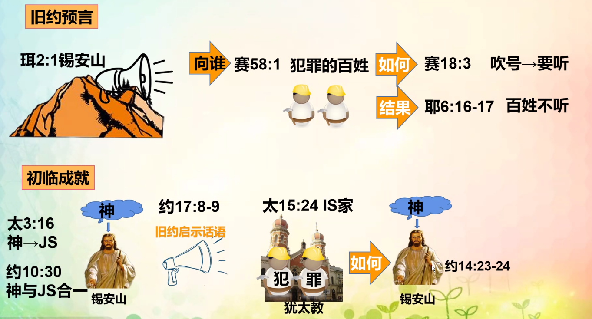
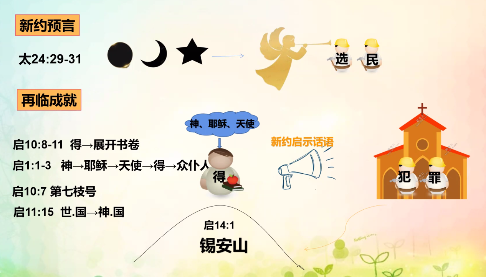

印记
<本文经文> 启 7:2-3
- 特点：表示对某件事认可，表明物品所属
- 真意
- 约 1:1 神的话语
- 约 3:31-33
- 印印 见证话语
- 受印 领受话语，认证并刻印在心版之上
- 种类
- 神
- 初临
- 约 6:27 JS → 神印证
- 约 15:1 神栽培耶稣
- 约 17:8-9
- 约 3:31-34 受印 → 神的所属
- 再临
- 启 10:1-2,8-10 天使 → 约翰
- 启 22:8 约翰 → 所见所闻
- 启 10:11
- 启 22:16
- 启 14:1,7:2-4 锡安山 144,000
- 撒旦
- 启 13:16-18 受666 兽印
- 手上：举手认证假教理
- 额上：被按手
- 受撒旦印：认证假牧者及其非真理
- 启 14:9-11
号
<本文经文> 太 24:29-31
- 特点：召聚、传达旨意、信号、响亮、用嘴吹（工具）
- 真意
- 号：人
- 吹号：灵
- 号声：告知的话语即晓谕发生之事件的声音
- 背景

旧约预言和成就

新约预言和成就
歌
启示录 15:3 本文经文：摩西的歌 +
羔羊的歌
唱 神仆人摩西的歌和羔羊的歌，说：
“主 神，全能者啊，你的作为大哉！奇哉！万世（或作“国”）之王啊，你的道途义哉！诚哉！
- 特点：歌谱、歌曲、曲
- 真意
- 诗 119:54 律例 → 歌
- 申 31:30 歌 → 话
- 分类
- 神的歌
- 启 15:3
- 摩西的歌：旧约圣经的话语
- 羔羊的歌：新约圣经的话语
- 启 14:3 新歌
- 启 14:6 永远
- 魔鬼的歌